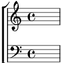

Refrain:
Viens, le vent nous rassemble, qu'il fait bon nous aimer.
Joie, le temps des voyages, d'un poème en bateau.
C'est la fête au village, notre escale à Rio.
1. Il faut au marin une étoile, un port.
Il faut à la note un accord.
Partout on est bien, on est là chez nous
Quand on chante, on a rendez-vous.
Refrain
2. On est le jardin, la maison, la terre.
Là-bas, l'horizon et la mer.
On a des refrains qui s'en vont danser.
La cigale y chante à la clef.
Refrain
3. Un jour on verra des printemps nouveaux,
La paix dans le nid d'un oiseau.
Alors on sera des marins de vie
Quand on chante, on a tout compris.
Refrain
Coda:
Car le temps d'être ensemble, c'est le temps le plus beau